Next: Implementing locally Up: Controlling Single Board Heater Previous: Implementing virtually
The PID controller in continuous time is given by
| 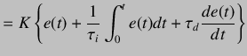 | (5.37) | |
|
On taking the Laplace transform, we obtain
| ||
 |
(5.38) | |
|
By mapping controller given in equation 5.38 to the discrete time domain using backward difference formula, we get
| ||
| 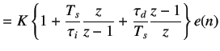 | (5.39) | |
|
On cross multiplying, we obtain
| ||
| 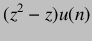 |  |
(5.40) |
|
We divide by 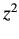 and by using shifting theorem, we get
| ||
| 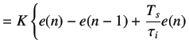 | ||
| 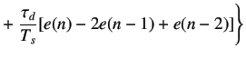 | (5.41) | |
|
The PID controller is usually written as
| ||
| 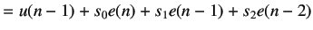 | (5.42) | |
|
where
| ||
| 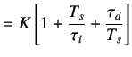 | (5.43) | |
| 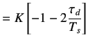 | (5.44) | |
| 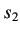 | 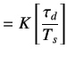 | (5.45) |